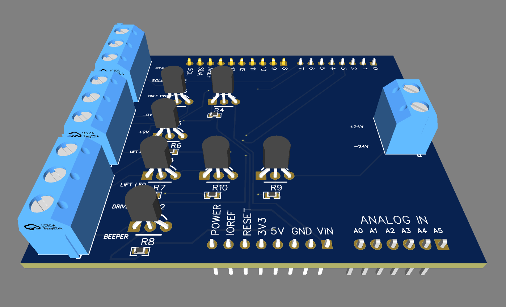
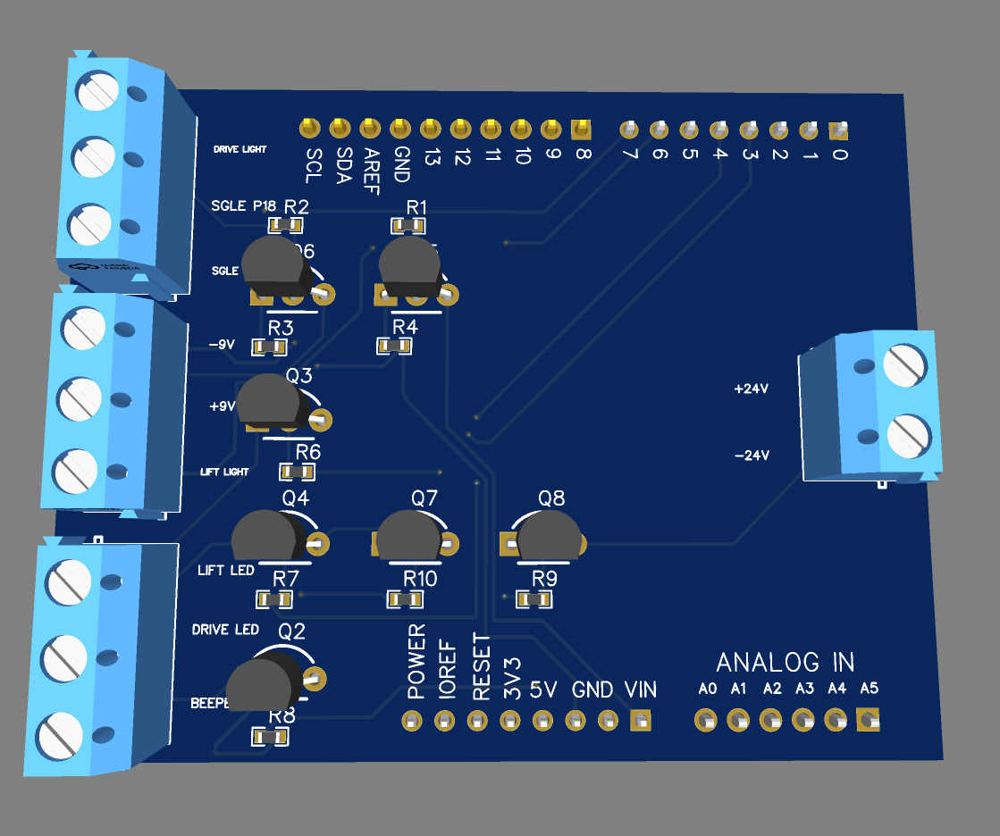
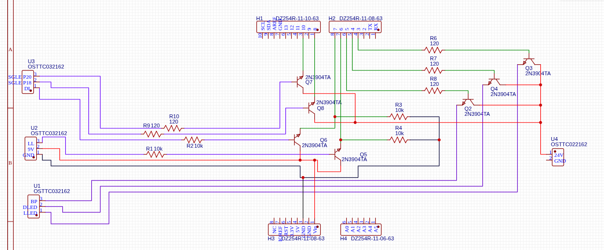
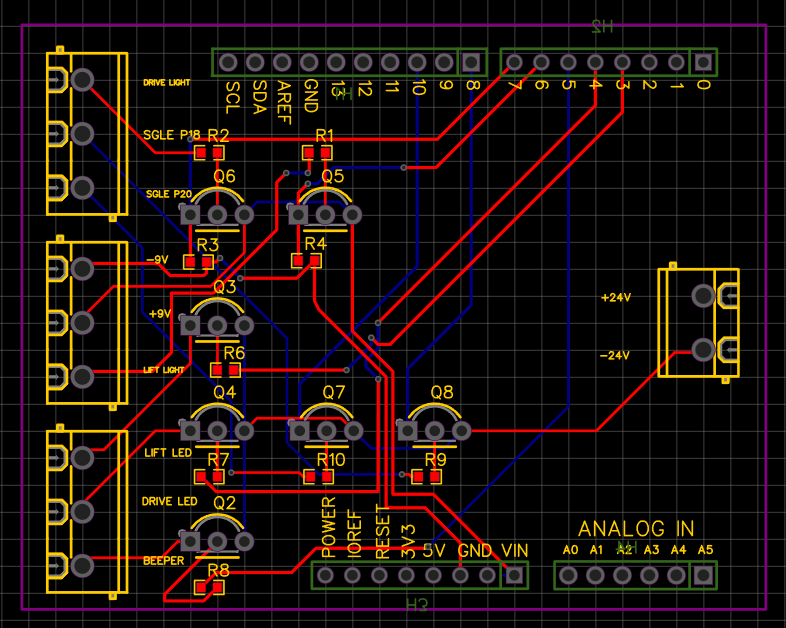
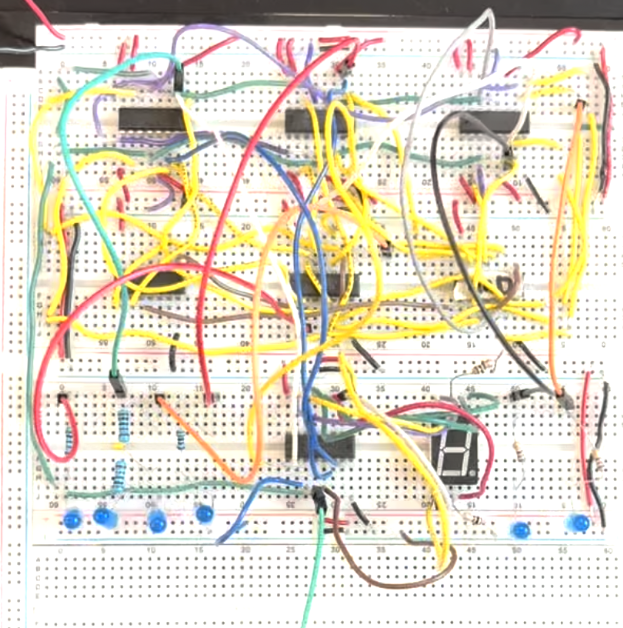
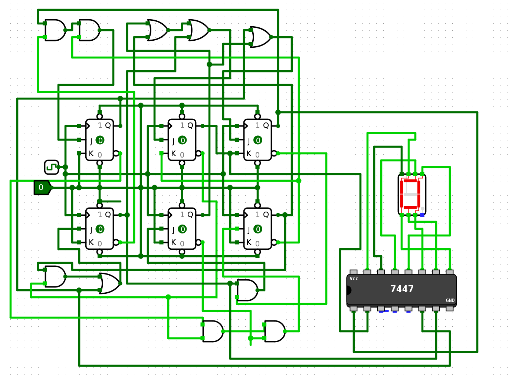

Fady Abousifein
Electrical Engineering Intern @ Honda of Canada Manufacturing • Mechatronics Engineering Co-op Student @ McMaster University • I love building systems that actually work! ...sometimes
About Me
I'm a third year Mechatronics Engineering student at McMaster University with a passion for embedded systems, hardware design, and robotics. I enjoy bridging the gap between software and hardware to create practical, real-world solutions.
Experience
Electrical Engineering Intern
Developed Mitsubishi GX Works2 PLC ladder logic and GT Designer3 HMI applications for HCM's first new engine launch in over 10 years, enabling multi-model engine head production across automated manufacturing cells.
Developed an industrial sensor-based model detection system integrating PLC ladder logic, HMI software, and electrical hardware to automate engine variant identification and enable multi-model manufacturing.
Designed and validated a custom mechanical fixture in CATIA V6 for multi-model engine head hardness testing, fabricating a prototype and optimizing the design for manufacturability and production deployment.
Reverse-engineered legacy automation systems by analyzing PLC logic, HMI interfaces, electrical schematics, and robot programs, implementing controls improvements on live Yaskawa Motoman and FANUC robotic systems.
Hardware Design and Simulation Engineering Intern
Reverse-engineered a competitor's collision detection system for scissor lifts using Arduino and ultrasonic sensing, implementing live distance measurements and automated lift control while preventing over $100K in losses.
Designed a custom Arduino shield PCB in EasyEDA integrating level shifting, power regulation, and driver circuits to interface a 24V industrial lift system with a 5V microcontroller.
Developed a prototype combining Arduino control, ultrasonic sensing, and CAN communication with a 24V scissor lift. Created electrical schematics in DraftSight and demonstrated the prototype to a major customer.
Debugged and validated system integration using Falstad Simulation, multimeter measurements, and PCAN-View CAN analysis to verify sensor I/O, controller logic, and lift communication.




Combinatorial Algorithms Research Assistant
Translated pseudocode from research papers into efficient C++ and C algorithms, enabling testing and validation of combinatorial optimization techniques on real-world datasets.
Used Maple for mathematical analysis and validation of algorithms, supporting research experiments and performance comparisons.
Contributed to the optimization of algorithms, reducing runtime in targeted cases and accelerating computational experiments.
Productive Software Development Research Assistant
Developed features for The Checker Framework VSCode extension, enhancing Java's type-checking workflows and code safety.
Migrated project dependencies from yarn to npm to maintain compatibility with evolving VSCode extension APIs, improving dependency management and project stability.
Updated and maintained technical documentation and project configuration to support future development and version updates.
Projects
Embedded Stepper Motor Control System
Engineered a real-time stepper motor control system on the STM32F429ZI using mbed OS, implementing non-blocking motion control with interrupt-based timing for precise angular positioning.
Developed interrupt-driven controls for stepper motor direction, speed, and stepping mode through debounced hardware inputs.
Designed and implemented a dynamic LCD interface displaying motor speed, stepping mode, direction, and system status with real-time feedback.
Sequential Digital Circuit Design
Engineered a sequential digital circuit to drive a seven-segment display showing a student ID. Applied finite state machines (FSMs), counters, and binary-coded decimal (BCD) encoding for precise sequencing.
Designed using 6 JK flip-flops and optimized Boolean logic via Karnaugh Map minimization. Verified in Logisim before building and testing the final design on a breadboard.


Please refer to the full Resume linked above for more detailed information.